R - Introduction
1 Getting Started
1.1 Introduction
In order to get started with programming in R, you need to download the following tools:
- base-R from the R-project website, which installs R on your computer https://stat.ethz.ch/CRAN/
- RStudio, which, to date, is the best IDE for R coding, and hybrid R and Python coding https://www.rstudio.com/products/rstudio/download/#download
You can simply run the installation process for R first, and then RStudio. Once you’ve installed both, you can launch RStudio and it should automatically detect your R installation and use it as the default interpreter.
1.2 Literature
After being introduced to R, there are some useful books that can be read to expand on your knowledge:
- R for Data Science by Hadley Wickham & Garrett Grolemund
- Machine Learning with R by Brett Lantz
- An Introduction to Statistical Learning by Gareth James, Daniela Witten, Trevor Hastie, and Robert Tibshirani
Hadley Wickham is the main contributor of some of the most used R-packages. Those packages were aggregated under a single umbrella package called the tidyverse. The book is available on the following website for free: https://r4ds.had.co.nz/. It goes much into depth than this introduction.
Machine Learning with R is a gentle introduction to machine learning with a crucial but very tightly written summary of the general statistics necessary for the understanding of those models. I recommend reading this whether or not you intend to create your own models, and before reading An Introduction to Statistical Learning.
An Introduction to Statistical Learning more complete, but is slightly more advanced, despite the enticing title. The math level required to understand its content is ranked as modest by the author, but is substantially more stringent than the above two titles.
1.3 R-Packages
Like most surface languages, R has a base version, which in itself is powerful enough to do most tasks. However, one of the strengths of R is the variety and quality of the packages that are available. Package are extensions that sometimes improve and simplify base-R functions, or sometimes add some that are absent. A lost of the most used tidyverse functions are available in a different form in base-R, but are, at least in my opinion, not as user-friendly, intuitive, and perhaps most importantly, not as readable post-writing.
Conversely, there is no connector in base-R that allows for a connection to an enterprise database. In some cases, rather than importing .csv or .xlsx data, you need to directly pull data from a MySQL database. There are different packages that offer such functionality. Those will be covered towards the end of this guide.
For now, here is a list of the packages you are very likely to use in any enterprise setting:
tidyverselubridateRMariaDB
The following sections of this document will expand on the base usage of each of those packages.
The tidyverse is a collection of packages that integrate together to help enhance your coding experience by providing a set of convenient features. Those features include the usage of pipes to chain commands, as well as the usage of a set of key function derived from the SQL language. Additionally, it also contains the ggplot2 visual library, which will be the main method by which you provide visualisations to the rest of the team.
The lubridate package provides a whole panel of options to work with date-objects, such as the ability to measure the a time-difference with many units, or the ability to retrieve day-names from a date.
The RMariaDB package provides a connector through which various databases can be accessed directly in R. This allows the user to connect at the beginning of a script and then pull data in real time directly from a MySQL database.
There are of course many other packages that will be of great use to you, but those are optional, whereas those listed above are mandatory.
1.4 RStudio
RStudio is a very powerful program, beyond editing standard r-scripts it helps you manage packages, provides you with an overview of your environment and all the plots your produce. It has a build in Viewer so that you are not forced to open a browser to view html content. Furthermore, it also allows for the creation of markdown files, shiny interactive apps, and more. You can also use other languages, such as SQL, Python, and many others. Most recently, the RStudio team has worked hard to create a framework enabling users to code in R and Python in a single script, enabling anyone to leverage the strengths of both languages.
However, the goal of this guide is not to go over all of the functionalities of the RStudio IDE. Instead, we will briefly go through the base functions at your disposal to get you started with writing code in R. For anything beyond that, a quick Google search will likely answer most of your queries.
1.4.1 Console
When you start RStudio for the first time, you will generally have three ‘main’ areas. In front of you on the left, the console:
The console will print the output of your commands. You can write all your code directly in there, but that would defeat the purpose of using RStudio. Instead, the standard method is to write a script and ran the commands within that script, the results of which will appear in the console.
Beyond the console pane, you also have a ‘Terminal’ and ‘Background Jobs’ tab. The terminal allows you to open a standard terminal window. By default this is a cmd prompt for windows and a git bash prompt for mac and linux users. The background jobs tab will be covered at a later stage.
1.4.2 Environment
At the top right of your screen, you have a box with the Environment tab:

This is were you can see all of the variables and objects you created, including vectors, dataframes, and functions. When you leave RStudio, you will be met with the option to save your session. This will preserve the objects that were stored in the environment during the session, at the expense of hard drive space on your computer.
1.4.3 Files and Viewer
The tab on the bottom right is where you can navigate to different files in the current working directory, see which packages are available and loaded, and view interactive and static plots:

1.4.4 Scripts
Instead of typing directly into the console, you should go to ‘New File’, located below the ‘File’ button, and create a new R script. You can then type in commands there and run them by highlighting the code and pressing Ctrl+Enter or using the ‘Run’ button. The advantage of having a script is that your code can be saved and used again, as opposed to typing it in directly everytime if you only used the console. There are many different types of scripts you can create, although those are not outlined in this version of the introduction.

1.5 Installing and Loading Packages
1.5.1 Package Installation
There are two ways to install packages in R. You can either use RStudio’s visual interface to navigate to ‘Tools > Install Packages…’ and type the name of the package you want to install. The packages should be installed from CRAN (default) into the library specified by default. You may change that path if necessary. Lastly, the ‘install dependencies’ box should be ticked. This makes sure that packages necessary to the functioning of the main package are also installed.
The second option you have is to type install.packages() and insert the name of the package you want to install. Note that it has to be wrapped into apostrophes or quotation marks. If you want to install more than one package at a time, you should use the c() notation, indicating that there are multiple elements. Here is an example on how to install the three packages listed above: install.packages(c('tidyverse','lubridate','RMariaDB'))
1.5.2 Loading Packages
Once those packages are installed, you need to load them. You’ll have to do this every time you start a new R session, so I advise you to have the loading process for each package you use at the top of each script. In order to load a package, use the library() command and insert the package name. Unlike the `install.packages’ function, you can only load one package at a time. However, since the package is being loaded from the global environment, you do not have to wrap it in quotation marks.
Show the code
library(tidyverse)Warning: package 'tidyverse' was built under R version 4.2.1── Attaching packages ─────────────────────────────────────── tidyverse 1.3.2 ──
✔ ggplot2 3.3.6 ✔ purrr 0.3.4
✔ tibble 3.1.8 ✔ dplyr 1.0.9
✔ tidyr 1.2.0 ✔ stringr 1.4.0
✔ readr 2.1.2 ✔ forcats 0.5.1Warning: package 'tibble' was built under R version 4.2.1── Conflicts ────────────────────────────────────────── tidyverse_conflicts() ──
✖ dplyr::filter() masks stats::filter()
✖ dplyr::lag() masks stats::lag()Show the code
library(lubridate)Warning: package 'lubridate' was built under R version 4.2.1
Attaching package: 'lubridate'
The following objects are masked from 'package:base':
date, intersect, setdiff, unionShow the code
library(RMariaDB)As you can see from the output, the tidyverse package contains and loads many packages at the same time. We will cover the some of the content of the other warning messages later in the documentation.
2 Understanding Data Structures and Object Types
2.1 Data Types
We will now look at a few practical examples to get started. Before we create some vectors to start the ball rolling, we need to look at some of the data types in R:
- character
- character data is usually a set of strings, such as words, or the combination of words and numbers
- numeric
- numeric data can take on any real number, decimal or otherwise
- integer
- self-explanatory, only contains integer numbers
- factor
- factors regroup all categorical variables. Those usually have levels. For example, if you have a gender vector containing ‘Male’ and ‘Female’, it is a categorical variable with two levels: ‘Male’ and ‘Female’.
- logical
- logical data is a subset of factor data. It is categorized as either TRUE or FALSE.
2.2 Creating the First set of Vectors
Now that you have a better understanding of the different data types, lets create a set of two vectors. The first one will be a character vector containing the names ‘Janice’, ‘John’, and ‘Patricia’. We will call this vector ‘names’. The second will be a set of integers listing their ages: 15, 27, and 56, respectively. We will call it age.
Show the code
names = c('Janice','John','Patricia')
age = c(15,27,56)Lets first comment on the structure used to create each of those vectors.
2.2.1 Variable Naming
You can choose any name you want for a variable, but it has to respect some rules:
- You cannot use spaces in the name of the variable. So ‘user names’ would not work. Instead the two words should be linked by an underscore: ‘user_names’. Alternatively you could use a period as the separator;
- Variables cannot have special characters;
- The variable cannot start with a number;
- Variables are case sensitive, so it matters if you use a capital letter or not. For convenience, it is recommended not to user capital letters unless absolutely necessary when creating variables.
2.2.2 ‘c()’ and ‘=’
When you create a vector containing multiple elements, you need to inform R you are doing so by wrapping the elements inside c(), and separating each element with a comma.
The equal operator indicates the creation of an object. Alternatively, and arrow can be used: ‘<-’. Note that the object is created in the direction of the arrow. If you did ‘->’ the object would be stored on the right and your code for the creation would have to be on the left.
2.2.3 Data Type upon Creation of a Vector
In the example above, the names are wrapped in apostrophes, whereas the numerical values are not. Anything other than numerical values needs to be wrapped either between apostrophes or quotation marks. Otherwise R will look for a variable inside the environment instead of creating new values. Let’s look at an example:
Show the code
names = c(names, 'Blaire','Daniel')
names[1] "Janice" "John" "Patricia" "Blaire" "Daniel" As you can see, R retrieves the ‘names’ variable from the environment and adds it to the ‘names_new’ variable. You can then add data of the same type to the vector. The old ‘names’ vector has now been replaced with a new one containing five observations.
The age vector only contains numerical values, so its elements should not be wrapped between apostrophes. What would happen if we did that? We use the class function to look at the data-type of the vector:
Show the code
age = c('15','27','56')
class(age)[1] "character"As you can see, the resulting vector is now a character vector. We could fix this by creating the vector anew. However, lets convert is using the as.numeric function and add two new age values.
Show the code
age = c(as.numeric(age), 45,33)
age # printing the age values[1] 15 27 56 45 33Show the code
class(age) # returning the type of data in the vector[1] "numeric"Now that you are more familiar with the creation of vector and with the methods to coerce the data type you need, lets create a categorical vector containing genders.
Show the code
gender = c('Female','Male','Female','Female','Male')
(gender)[1] "Female" "Male" "Female" "Female" "Male" As you can see, R has treated our categorical vector as a character vector. This is because we did not wrap it:
Show the code
gender = factor(c('Female','Male','Female','Female','Male'))
class(gender)[1] "factor"Because gender is a categorical vector, you can retrieve the levels which R automatically assigned:
Show the code
levels(gender)[1] "Female" "Male" One last thing that is important about categorical vectors is that they can be ordered. From the output above, you can see that the order is Female and then Male. Suppose that you would want it the other way around, you can either specify the order upon creation, or subsequently reorder the vector.
Show the code
gender = factor(c('Female','Male','Female','Female','Male'), levels = c('Male','Female'))
levels(gender)[1] "Male" "Female"Show the code
gender = factor(gender, levels = c('Female','Male'))
levels(gender)[1] "Female" "Male" 2.3 DataFrames
This section will outline the creation and overall purpose of dataframes. Dataframes allow for the aggregation of vectors with an added column name to each one. It essentially resembles a raw datasheet you would get in excel. Below is an illustration of the general structure a dataframe takes on. V1,V2,V3, and V4 are vectors similar to the ones we created above.
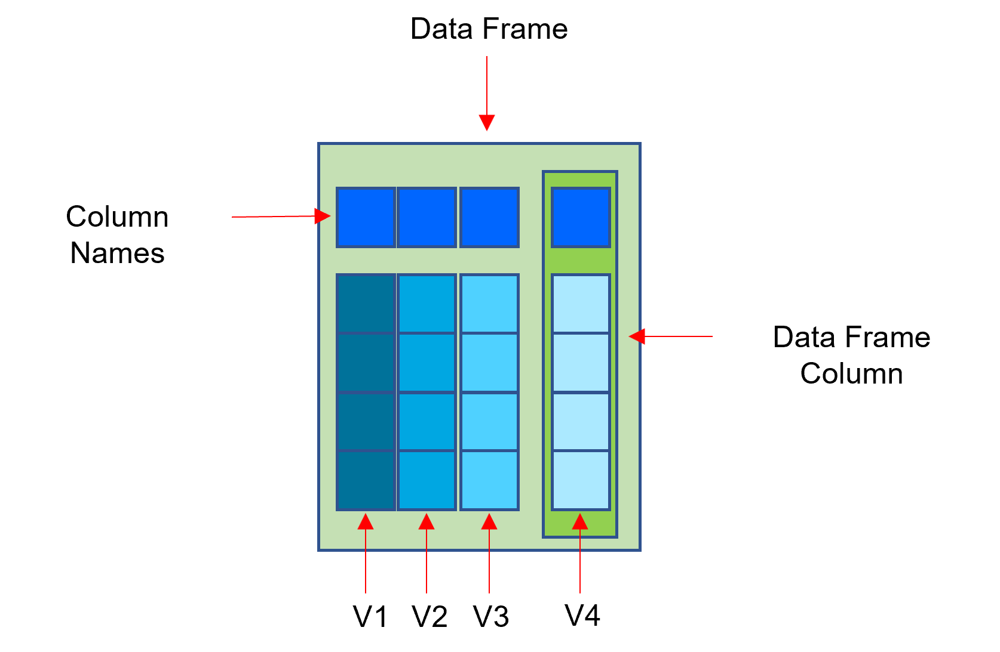
Base R has a number of functions to create and manipulate dataframes. However, I suggest you immediately get acquainted with and start using tibbles. Those are the tidyverse package version of dataframes. For more information on how they work and the advantages over a traditional R-base dataframe, please leaf through chapter 10 of the book.
Let’s create a small tibble (dataframe), which we’ll call ‘df’, with the three vectors we created so far.
Show the code
library(tidyverse)
df = tibble('name' = names,
'age' = age,
'gender' = gender)
print(df)# A tibble: 5 × 3
name age gender
<chr> <dbl> <fct>
1 Janice 15 Female
2 John 27 Male
3 Patricia 56 Female
4 Blaire 45 Female
5 Daniel 33 Male First, we load the tidyverse package (if that hasn’t been done for this R-session yet). Then we call the object we’re creating ‘df’. The tibble() function requires you to list all the vectors you want in the tibble. You first give a column name in between apostrophes, then use the equal sign to signal what will be associated to that column name. Lastly, you need to specify which vector is going to be associated to each column name. You need to separate each column you create with a comma.
Note that now, each vector we had is a column in the dataframe, with the data points associated with one another. Between the column names and the values of the vectors, there are abbreviations indicating the data type of each column. You can see that the dataframe preserves the data types associated with each original vector.
2.4 Importing Data
You are, of course, not required to build all of your dataframes observation by observation. You can import data into R from many different sources. Later in the document we will look at how to connect to a database directly, but for now we’ll just go through the basics, such as loading a .csv or .xlsx file. Those are, in any case, the most common types of files you’ll be loading.
R-base already has a set of tools to import .csv files. However, you need to install a package if you want to read xl files in R. That package is aptly named readxl. You can then use the read_excel function to open a .xlsx file.
Show the code
read.csv("data/example_1.csv") Names Age Gender
1 Janice 15 Female
2 John 27 Male
3 Patricia 56 Female
4 Blaire 45 Female
5 Daniel 33 MaleShow the code
library(readxl)
read_excel("data/example_1.xlsx")# A tibble: 5 × 3
Names Age Gender
<chr> <dbl> <chr>
1 Janice 15 Female
2 John 27 Male
3 Patricia 56 Female
4 Blaire 45 Female
5 Daniel 33 Male Opening a file is quite straightfoward. You specify the path in between quotation marks, and then end with the filename, a period, and the file extension. Different folders are separated with a forward slash, ‘/’. If you instaed choose to use a backslash, ‘\’, you need to use two to let R know that you’re handling a special character outside of its intended purpose.
2.5 Working Directory
Lastly, in the example above, only the filename, or the last folder in which the file is contained are listed in the file path. This is because R uses a working directory system. You can list the path directly starting in the current working directory, or the full path if your file is contained outside of your working directory. In case you’re unsure what you current working directory is, you can find out:
Show the code
getwd()[1] "C:/Users/james/Documents/GitHub/Introduction-to-R/docs"Additionally, you can change the working directory with the setwd() command. Inside you should include the path of the directory wrapped in quotation marks.
Show the code
setwd("C:/Users/james/Documents/GitHub/Introduction-to-R")
getwd()[1] "C:/Users/james/Documents/GitHub/Introduction-to-R"Show the code
setwd("C:/Users/james/Documents/GitHub/Introduction-to-R/docs")3 Exploring a DataSet
3.1 Loading a dataset and displaying the first row of data
Now that you have a fundamental understanding of tibbles and how to import datasets in R, let’s open the ‘Used-Car Data’ dataset. You can get it here by creating a free account on kaggle: https://www.kaggle.com/datasets/shubham1kumar/usedcar-data?select=UserCarData.csv You can also find the dataset in the Public Github repository https://github.com/JamesHM1995/Introduction-to-R under ‘docs/data’. We load the dataset using the read.csv function, and then use head(, n = 1) to display the first row of data.
Show the code
usedcars <- read.csv("C:/Users/james/Documents/GitHub/Introduction-to-R/docs/data/UsedCarData.csv")
head(usedcars, n = 1) Sales_ID name year selling_price km_driven Region State.or.Province
1 1 Maruti 2014 450000 145500 East District of Columbia
City fuel seller_type transmission owner mileage engine
1 Washington Diesel Individual Manual First_Owner 23.4 1248
max_power torque seats sold
1 74 190Nm@ 2000rpm 5 YUsing head works well when a dataset just contains a few variables. However, you can see from the output above that this isn’t the easiest way to obtain a readable output.
3.2 Skimr and Data Exploration
We will therefore use a package that helps with data exploration. That packages is called skimr. You can install it using the install.packages function, and then load it with library. Once you’re done doing that, you can use the skim function on the data, which is saved in the global environment as ‘trains’.
Show the code
library(skimr)
skim(usedcars)| Name | usedcars |
| Number of rows | 7906 |
| Number of columns | 18 |
| _______________________ | |
| Column type frequency: | |
| character | 10 |
| numeric | 8 |
| ________________________ | |
| Group variables | None |
Variable type: character
| skim_variable | n_missing | complete_rate | min | max | empty | n_unique | whitespace |
|---|---|---|---|---|---|---|---|
| name | 0 | 1 | 2 | 10 | 0 | 31 | 0 |
| Region | 0 | 1 | 4 | 7 | 0 | 4 | 0 |
| State.or.Province | 0 | 1 | 4 | 20 | 0 | 49 | 0 |
| City | 0 | 1 | 3 | 19 | 0 | 1310 | 0 |
| fuel | 0 | 1 | 3 | 6 | 0 | 4 | 0 |
| seller_type | 0 | 1 | 6 | 16 | 0 | 3 | 0 |
| transmission | 0 | 1 | 6 | 9 | 0 | 2 | 0 |
| owner | 0 | 1 | 11 | 18 | 0 | 5 | 0 |
| torque | 0 | 1 | 5 | 27 | 0 | 441 | 0 |
| sold | 0 | 1 | 1 | 1 | 0 | 2 | 0 |
Variable type: numeric
| skim_variable | n_missing | complete_rate | mean | sd | p0 | p25 | p50 | p75 | p100 | hist |
|---|---|---|---|---|---|---|---|---|---|---|
| Sales_ID | 0 | 1 | 4070.11 | 2345.77 | 1.0 | 2037.25 | 4076.5 | 6102.00 | 8128 | ▇▇▇▇▇ |
| year | 0 | 1 | 2013.98 | 3.86 | 1994.0 | 2012.00 | 2015.0 | 2017.00 | 2020 | ▁▁▂▆▇ |
| selling_price | 0 | 1 | 649813.72 | 813582.75 | 29999.0 | 270000.00 | 450000.0 | 690000.00 | 10000000 | ▇▁▁▁▁ |
| km_driven | 0 | 1 | 69188.66 | 56792.30 | 1.0 | 35000.00 | 60000.0 | 95425.00 | 2360457 | ▇▁▁▁▁ |
| mileage | 0 | 1 | 19.42 | 4.04 | 0.0 | 16.78 | 19.3 | 22.32 | 42 | ▁▃▇▁▁ |
| engine | 0 | 1 | 1458.71 | 503.89 | 624.0 | 1197.00 | 1248.0 | 1582.00 | 3604 | ▇▇▂▂▁ |
| max_power | 0 | 1 | 91.59 | 35.75 | 32.8 | 68.05 | 82.0 | 102.00 | 400 | ▇▂▁▁▁ |
| seats | 0 | 1 | 5.42 | 0.96 | 2.0 | 5.00 | 5.0 | 5.00 | 14 | ▁▇▂▁▁ |
This structure should be clearer to interpret. You obtain the dimensions of the data, how frequent each data type is, and you get summary statistics by data type. One of the strengths of the skim function is how well it highlights missing data. At a glance, you can see from the complete_rate column in the output that the dataset contains no missing observations.
3.3 Commenting Code
In this last subsection relating to exploratory analysis, we will remark on a general principle: annotating code. At first, this will seem tedious and unecessary. However, there are three reasons to do this religiously:
- Interpreting unfamiliar code
- Resuming work on an old script
- Continuity and Teamwork
The first reason has to do with the learning curve in R. You will initially have to deal with many functions until you can comfortably open, reshape, and analyse data. Where a certain piece of code or function might seem clear and easy to memorize at first, it is very easy to forget how to replicate it, or just find it in a script. With proper annotation that problem should be mostly eliminated.
The second reason pertains to the number of scripts you will eventually have. It is not unlikely to have one left idle for months. It is then not necessarily obvious what was being done, to what end, and using which tools.
Lastly, you are likely to work in a team. As soon as that is the case, annotating code will save you the time to explain every chunk of code to your colleagues. It also makes it easier for someone to pick up one of your scripts from GitHub without requiring more information than what is containing in the readme file.
4 Using the Tidyverse to Manipulate Tibbles
This section will look at the key functions provided by the tidyverse to transform tibbles.
You will be able to do most of your work using only a select number of commands.
Selecting and Arranging Data
selectSubset column using their name and typesfilterSubset rows using column valuesarrangeArrange rows by column valuesdistinctSubset distinct/unique rows
Grouping
groupbyGroup data by column
Aggregating Data
summariseSummarise each group to fewer rowscount/tallyCount observations by group
Transforming Columns or Values
mutateCreate, modify, and delete columnsrenameRename columns
Throughout this section we will use the usedcars dataset that we loaded earlier.
4.1 The pipe operator ( %>% )
Before we get started with the list of functions highlighted above, one more tool is be necessary: the pipe operator (%>%). Most function in R require that you wrap at least two arguments: the dataset you are using and the nature or the transformation you are doing.
Let’s use the colnames function with a pipe. Much like with head you would usually wrap the function around the dataframe. However, using the pipe operator we can do the following:
Show the code
# Note that you might have to load the tidyverse package if you have not already done so for your active R-session
usedcars %>%
colnames() [1] "Sales_ID" "name" "year"
[4] "selling_price" "km_driven" "Region"
[7] "State.or.Province" "City" "fuel"
[10] "seller_type" "transmission" "owner"
[13] "mileage" "engine" "max_power"
[16] "torque" "seats" "sold" As you can see, we start by writing the data source, followed by the pipe operator (%>%), and wrap the second argument inside the function. You can use Ctrl+Shift+m to call the pipe operator. Where the advantages might not seem immediately obvious, they will appear clearly as the volume of the code in your script increases.
However, I will point out my personal reason for using this structure where possible:
- Clearer Identification:
- which dataset is being used;
- which function is being called;
- where the dataset argument is as opposed to the specific function arguments (e.g. when using head(), separates the data from the n = 1 argument)
- Code readability for others
- makes it easier for outside readers to review and edit your code
4.2 select
Suppose we want to view a subset of the data with a smaller number of columns that are of interest to us. We could decide to select the ‘Sales_ID’, ‘name’, ‘year’, and ‘seats’ column. To achieve that, we use the select function:
Show the code
usedcars %>%
select(c('Sales_ID', 'name','year','seats')) %>%
head(n = 2) # Here I limit the output to 2 rows to avoid clogging the document with necessary data Sales_ID name year seats
1 1 Maruti 2014 5
2 2 Skoda 2014 5You could of course store the output in another object by doing ‘object_name’ = ‘code_above’.
You can also use select to remove some columns from analysis by adding a minus sign in front of c()
Show the code
usedcars %>%
select(-c('name','year')) %>%
head(n = 2) Sales_ID selling_price km_driven Region State.or.Province City
1 1 450000 145500 East District of Columbia Washington
2 2 370000 120000 East New York New York City
fuel seller_type transmission owner mileage engine max_power
1 Diesel Individual Manual First_Owner 23.40 1248 74.00
2 Diesel Individual Manual Second_Owner 21.14 1498 103.52
torque seats sold
1 190Nm@ 2000rpm 5 Y
2 250Nm@ 1500-2500rpm 5 YYou can see from the output that the ‘name’ and ‘year’ columns have now been removed. Instead of using columns names, it is also possible to refer to columns by id, using their position in the dataframe. For example we could elect to only keep the first 7 columns:
Show the code
usedcars %>%
select(c(1:7)) %>%
head(n = 2) Sales_ID name year selling_price km_driven Region State.or.Province
1 1 Maruti 2014 450000 145500 East District of Columbia
2 2 Skoda 2014 370000 120000 East New YorkYou can apply this method to select or remove any column from the data:
Show the code
usedcars %>%
select(c(1,5,10,12,13:15)) %>%
head(n = 2) Sales_ID km_driven seller_type owner mileage engine max_power
1 1 145500 Individual First_Owner 23.40 1248 74.00
2 2 120000 Individual Second_Owner 21.14 1498 103.52Exercise
For further analysis, we can create a subset of this data with fewer columns. Choose the shortest method to keep the following columns in a subset called subset: * Sales_ID * year * fuel * selling_price * km_driven * Region
Once you’ve tried you can look at the solution here:
Show the code
subset = usedcars %>%
select(c('Sales_ID','year','fuel','selling_price','km_driven','Region'))4.3 filter
Now that you’re familiar with the select function, we can move on to filtering data. The filter function allows us to keep rows in the data that meet one or more conditions. Suppose we would like to only keep entries for cars built in 1996. The filter function requires two arguments beyong the dataset: the column to filter from and the condition(s):
Show the code
subset %>%
filter(year == 1996) Sales_ID year fuel selling_price km_driven Region
1 4109 1996 Petrol 40000 32000 West
2 6934 1996 Petrol 42000 70000 SouthYou can use any of the following operators in this function:
| Operator | Function |
|---|---|
| == | equal to |
| != | not equal to |
| < | smaller than |
| > | greater than |
| >= | smaller than or equal to |
| => | greater than or equal to |
Note that we do not use a single equal sign, but rather, a double equal sign. This is because we do not assume a match, we simply ask R whether there’s a possibility for a match, and if so, to return the datapoint(s) where that is the case.
It is also possible to chain conditions. Use the ‘&’ (and) sign for a joint set of conditions: Suppose that you want to see all petrol engine cars that were build after 2010:

Show the code
subset %>%
filter(year > 2010 & fuel == 'Petrol') %>%
head(n = 3) Sales_ID year fuel selling_price km_driven Region
1 6 2017 Petrol 440000 45000 East
2 16 2016 Petrol 400000 40000 East
3 25 2018 Petrol 500000 35000 EastAlternatively, you can usethe ‘|’ (or) sign for an independent set of conditions.

Show the code
subset %>%
filter(year > 2010 | fuel == 'Petrol') %>%
head(n = 3) Sales_ID year fuel selling_price km_driven Region
1 1 2014 Diesel 450000 145500 East
2 2 2014 Diesel 370000 120000 East
3 3 2006 Petrol 158000 140000 Central4.4 arrange
Sometimes, the sequential order of data matters. In those cases, you might want to arrange it in a particular order before grouping and/or summarising. Our subset dataset should be arranged already by default using the first column: ‘Sales_ID’. We could instead prefer to have it ordered by year:
Show the code
subset %>%
arrange(year) %>%
head(n = 10) Sales_ID year fuel selling_price km_driven Region
1 1475 1994 Petrol 45000 60000 East
2 4713 1994 Diesel 99000 100000 South
3 3891 1995 Petrol 55000 70000 Central
4 4109 1996 Petrol 40000 32000 West
5 6934 1996 Petrol 42000 70000 South
6 2425 1997 Petrol 60000 25000 West
7 5412 1997 Petrol 50000 110000 West
8 5703 1997 Petrol 70000 100000 South
9 5715 1997 Petrol 29999 80000 Central
10 5727 1997 Petrol 125000 94000 CentralYou can see from the output above that the data is now organised by year, which are in sequential order, whereas the ‘Sales_ID’ values are mixed up. It is also possible to specify the direction of order:
Show the code
subset %>%
arrange(desc(year)) %>%
head(n = 5) Sales_ID year fuel selling_price km_driven Region
1 107 2020 Petrol 400000 5000 Central
2 116 2020 Petrol 475000 13000 East
3 197 2020 Petrol 720000 5000 South
4 225 2020 Petrol 524000 32000 South
5 403 2020 CNG 409999 35000 CentralThe data now starts with the most recent observation.
In some instances, you might want to sort the data based on more than one column. To do so, you can list any number of columns. By default, those will be sorted in ascending order. However, you can specify the direction for each column. We could want to view to data from most the most recent car to the oldest, but sort each year value based on the selling price in ascending order:
Show the code
subset %>%
arrange(desc(year),selling_price) %>%
head(n = 5) Sales_ID year fuel selling_price km_driven Region
1 2326 2020 Petrol 250000 120000 Central
2 3672 2020 Petrol 250999 30000 West
3 6677 2020 Diesel 260000 50000 West
4 6422 2020 Petrol 265000 70000 Central
5 2656 2020 Petrol 330000 70000 Central4.5 distinct
Sometimes you need to explore how many unique values you have in a dataframe. Where the count and tally functions will be more handy when it comes to simply count or assess how many unique observations of each type you have, the distinct function allows you to get rid of duplicates in your data. Let’s assume you suspect that there might be more than one ‘Sales_ID’. Since it is the primary key for the table this should not be the case. However, there are sometimes errors when recording data into a database, resulting in duplicate entries where there should only be unique entries. We will therefore check the length of the data as it is by using the dim function:
Show the code
subset %>%
dim()[1] 7906 6We have 7906 observations. Now let’s apply the distinct function to the ‘Sales_ID’ column, followed by the dim function:
Show the code
subset %>%
distinct(Sales_ID) %>%
dim()[1] 7906 1As you can see, we get the same number of rows: 7906. This means that there are no duplicates.
Suppose you want to use the distinct function to extract the number of unique years present in the data. You could do the following:
Show the code
subset %>%
distinct(year) %>%
arrange(year) %>% # Arrange the column by year in ascending order
head(n = 4) # Only display the first 4 observations year
1 1994
2 1995
3 1996
4 1997The distinct function returns all the unique year values as a dataframe with a single column. Only the four first observations are displayed here because we used the head function.
In some cases, you will want to extract unique values of a column but preserve the dataframe. Since this example set only has unique primary key values, it is not necessary. However, we will still look at an example where you would like to keep unique ‘km_driven’ values, and preserve the other columns. We would need to add the .keep_all argument and set it equal to TRUE. Note that by default it is set to false, and that there needs to be a period preceding the argument:
Show the code
subset %>%
distinct(km_driven, .keep_all = TRUE) %>%
head(n = 4) Sales_ID year fuel selling_price km_driven Region
1 1 2014 Diesel 450000 145500 East
2 2 2014 Diesel 370000 120000 East
3 3 2006 Petrol 158000 140000 Central
4 4 2010 Diesel 225000 127000 CentralShow the code
subset %>%
distinct(km_driven, .keep_all = TRUE) %>%
dim()[1] 898 6You can see from the dimension of the new dataset that the columns have all been preserved (6), but the number of obsevations has been reduced to 898 down from 7906.
4.6 summarise
The summarise function allows you to perform aggregate operations, such as summing, descriptive statics (e.g. mean, median, etc.), and variant-wise counting. We start by looking at the base-R version of doing things. Looking back into our ‘subset’ dataframe, we can calculate the mean selling_price for the whole dataset:
Show the code
mean(subset$selling_price)[1] 649813.7This is the base-R notation, where the dataframe goes inside the function, and you specify the column by naming it preceded by a dollar sign. The mean function is not a tidyverse function. It will also transform your data completely, rather than just re-arranging the dataframe. It can therefore not be called directly after a pipe. You can try this by entering the following code: subset %>% mean(selling_price). You’ll get a warning and it will return an empty value.
what you should do instead is pass the mean function inside the summarise function as follows:
Show the code
subset %>%
summarise(mean(selling_price)) mean(selling_price)
1 649813.7Note that with the method above the resulting column will have a very inconvenient name: ‘mean(selling_price)’. You could instead name the column as follows:
Show the code
subset %>%
summarise(mean_price = mean(selling_price)) mean_price
1 649813.7Any aggregation function can be passed inside of the summarise function:
Show the code
subset %>%
summarise(total_price = sum(selling_price)) total_price
1 5137427277You can also perform multiple simultaneous operations inside the summarise function:
Show the code
subset %>%
summarise(mean_price = mean(selling_price),
total_price = sum(selling_price)) mean_price total_price
1 649813.7 51374272774.7 group_by
Now that you have seen how the summarise function works, we can properly introduce the group_by function. Going back to the example we used above, where we calculated the mean selling price of the whole dataset, we could need a more precise average. Suppose you want the average for each year in the whole dataset. This is where the group_by function comes into play. You simply need to choose the grouping argument, the year in this case, and then follow with the summarise function, exactly as we did above:
Show the code
subset %>%
group_by(year) %>%
summarise(mean_price_year = mean(selling_price)) %>%
arrange(year) %>%
head(n = 4)# A tibble: 4 × 2
year mean_price_year
<int> <dbl>
1 1994 72000
2 1995 55000
3 1996 41000
4 1997 86111The output is a dataframe listing the mean selling price for each year. The group_by function is possibly the most important tidyverse function, since it allows you to run all of your transformations on a subset of observations.
You can of course have more than one grouping variable. Suppose you want the same output as above, but with more granularity, such that you would know the mean selling price by year for each fuel type:
Show the code
subset %>%
group_by(fuel, year) %>%
summarise(mean_price_year_eng = mean(selling_price)) %>%
arrange(year) %>%
head(n = 6)`summarise()` has grouped output by 'fuel'. You can override using the
`.groups` argument.# A tibble: 6 × 3
# Groups: fuel [2]
fuel year mean_price_year_eng
<chr> <int> <dbl>
1 Diesel 1994 99000
2 Petrol 1994 45000
3 Petrol 1995 55000
4 Petrol 1996 41000
5 Petrol 1997 86111
6 Petrol 1998 57889.Now for each fuel type, you have the mean selling price by year. Much like the summarise example above, you could also do multiple summarising operations in a single transformation. Note that group_by is a persistent function. Sometimes your might want to perform multiple operations in a row that require different grouping sequences. In such cases the data will remain grouped unless otherwise specified. It is therefore good practise that if you intend on using the output for anything else than storage of visualisation, you should ungroup the data:
Show the code
subset %>%
group_by(fuel, year) %>%
summarise(mean_price_year_fuel = mean(selling_price)) %>%
arrange(year) %>%
head(n = 1) %>%
ungroup()`summarise()` has grouped output by 'fuel'. You can override using the
`.groups` argument.# A tibble: 1 × 3
fuel year mean_price_year_fuel
<chr> <int> <dbl>
1 Diesel 1994 990004.8 count/tally
The count function is a self-contained summarising function that counts all the unique observations in a dataframe colum. It returns a column containing the unique observation names, and the number of occurences of each one in the data. Suppose we want to know which types of fuel are in the data, and how many times they occur, we can simply call our dataframe, and pass the ‘fuel’ column into the count function:
Show the code
subset %>%
count(fuel) fuel n
1 CNG 52
2 Diesel 4299
3 LPG 35
4 Petrol 3520You can see that the resulting dataframe has 4 rows, indicating that there are 4 different types of fuel, and the “n” value indicates the number of occurences for each type. You can make the output more tidy by adding two arguments to the count function. The first one is the name of the count column, which is determined by ‘name =’. The second one is the order in which the data is displayed. The usual way would be to add the arrange function and chain it with a pipe. However, the count function has a built in argument to arrange the result in descending order. You can pass the ‘sort = TRUE’ argument:
Show the code
subset %>%
count(fuel, sort = TRUE, name = 'observation_count') fuel observation_count
1 Diesel 4299
2 Petrol 3520
3 CNG 52
4 LPG 35You can use count with more than one grouping variable, however, it is rather inefficient because you have to go through the process of naming each column. Instead, if you’re looking to count observations based on two or more grouping variables, I recommend using group_by with . Let’s suppose that you would like to count the number of observations for each fuel type and Region combinations:
Show the code
subset %>%
group_by(fuel, Region) %>%
tally(name = "observation_count") %>%
arrange(desc(observation_count)) %>%
head(n = 4)# A tibble: 4 × 3
# Groups: fuel [2]
fuel Region observation_count
<chr> <chr> <int>
1 Diesel Central 1328
2 Diesel West 1048
3 Diesel East 1031
4 Petrol Central 1021As you can see, the grouping variables are passed into the group_by function, whereas the count is performed by the tally function. Within tally you can also immediately rename the count column, and using prior knowledge from the arrange function to sort the output.
4.9 mutate
The mutate function allows its user to create or transform dataframe columns. It performs simultaneous column-wise operations. It is also usually restricted to per-column operations, although some of the variations of the functions allow for applications on multiple columns in the data.
Let’s return to our subset dataframe and perform some changes to it. The ‘km_driven’ values are given in kms, as indicated by the column name. However, we could want to reduced the volume of the column by displaying that data in thousands of kms:
Show the code
subset = subset %>%
mutate(thousand_km_driven = km_driven / 1000)
subset %>%
head(n = 3) Sales_ID year fuel selling_price km_driven Region thousand_km_driven
1 1 2014 Diesel 450000 145500 East 145.5
2 2 2014 Diesel 370000 120000 East 120.0
3 3 2006 Petrol 158000 140000 Central 140.0The mutate function can be applied to do various types of transformations. Numeric columns can be combined through any standard mathematical operators. Be cautious when naming the new column generated. If that column already exists if will replace the existing one. Let’s illustrate this by multiplying our new column values by 0, and give the output column the same name:
Show the code
subset %>%
mutate(thousand_km_driven = thousand_km_driven * 0) %>%
head(n = 3) Sales_ID year fuel selling_price km_driven Region thousand_km_driven
1 1 2014 Diesel 450000 145500 East 0
2 2 2014 Diesel 370000 120000 East 0
3 3 2006 Petrol 158000 140000 Central 04.10 rename
The rename is a simplified version of mutate that only allows the user to rename one or more columns. From the above examples, if you wanted to change the ‘Region’ column name to remove the capital ‘R’. You could of course use mutate and delete the old column with select:
Show the code
subset %>%
mutate(region = Region) %>%
select(-Region) %>%
head(n = 1) Sales_ID year fuel selling_price km_driven thousand_km_driven region
1 1 2014 Diesel 450000 145500 145.5 EastThis has the following downsides:
- requires two different lines of code
- moves the renamed column to the last position in the dataframe unless otherwise specified
- computationally slower
Instead of using mutate, you can do the same as above without displacing the ‘Region’ column by using rename. The arguments are ‘new name’ equals ‘old name’:
Show the code
subset %>%
rename(region = Region)%>%
head(n = 1) Sales_ID year fuel selling_price km_driven region thousand_km_driven
1 1 2014 Diesel 450000 145500 East 145.55 Visualising Data with ggplot2
5.1 Introduction - Why ggplot2?
Once you have gone through the most important tidyverse functions, you should be comfortable enough with data manipulation to create your first set of graphs. R-base has a visualisation library built-in. Suppose you would like to view the relationship between the selling_price and km_driven from our earlier subset.
Show the code
plot(subset$km_driven, subset$selling_price)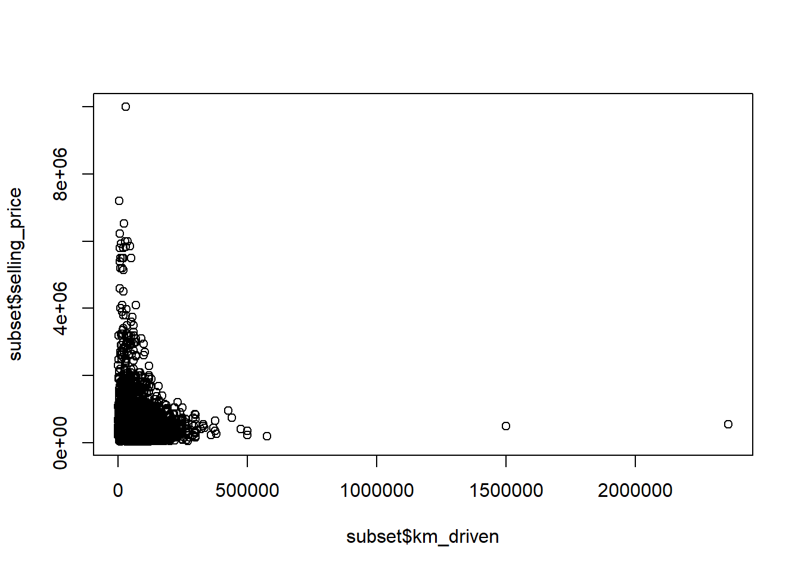
The creation of a plot is quite straightforward with this library. However, I tend to use ggplot2 for almost all my analysis. The same plot can be done with that library (which is loaded automatically with the tidyverse package):
Show the code
subset %>%
ggplot(aes(km_driven, selling_price)) +
geom_point()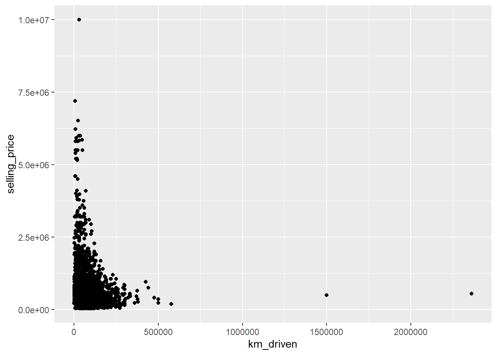
Voilà! Let’s look at the differences. It is clear that the code to obtain such a plot is shorter and faster to write in the base visualisation library. However, it is less ‘tidy’, in the sense that the ggplot2 code is easier to read. The data used is clearly stated, the columns are on a different line, and you can see the type of plot that is requested.
Yet, in spite of those differences, one of the biggest advantages to ggplot2 in my view is the ability to chain data with pipes. This essentially means that you can run transformations and are not required to store them in the global environment. We’ll briefly illustrate this. Let us suppose we only want to visualise the above relationship for cars sold in the ‘East’ region. With base-R plots we would do the following:
Show the code
subset_east = subset %>%
filter(Region == 'East')
plot(subset_east$km_driven, subset_east$selling_price)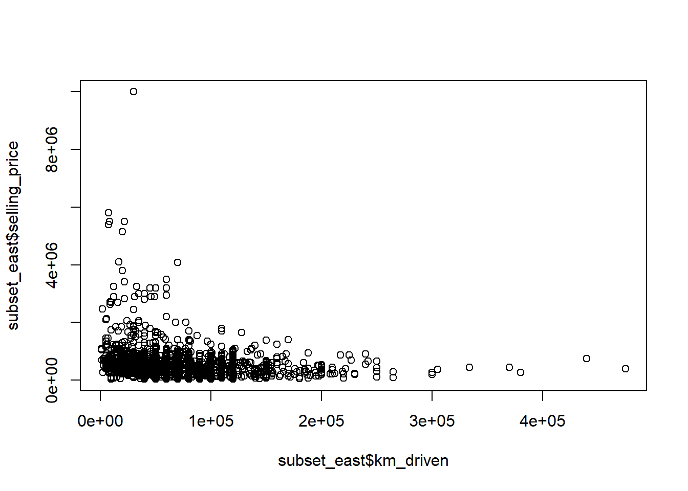
The ggplot2 equivalent would require the following code:
Show the code
subset %>%
filter(Region == 'East') %>%
ggplot(aes(km_driven, selling_price)) +
geom_point()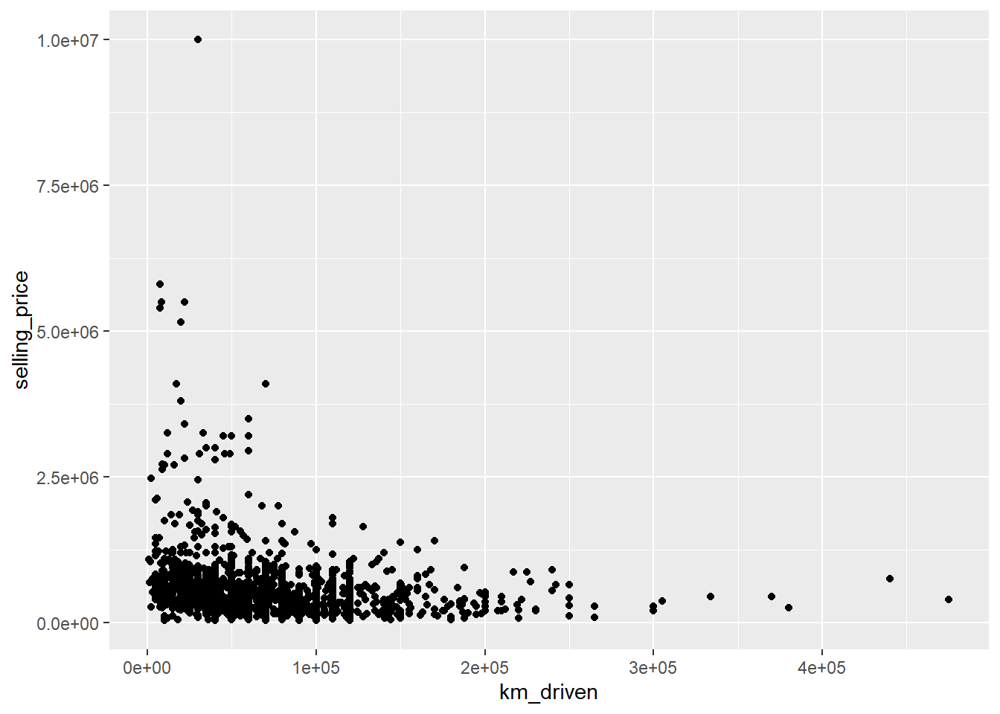
In the second scenario, we are not forced to store a new dataframe in lieu of our original data to produce the plot. This is handy when you want to apply a transformation only for the purpose of a single visualisation.
5.2 Plot Basics
In the previous section we created a scatterplot using geom_point(). There are of course either types of plot availabe to us.
5.2.1 Bar Plot
Suppose we want a barchart that contains the average selling price per region. We will use all our aquired knowledge to obtain the mean using group_by, summarise, and mean. Note that we use the round function to remove any number after the decimal point.
Show the code
subset %>%
group_by(Region) %>%
summarise(mean_regional_sell = round(mean(selling_price, na.rm = TRUE),0))# A tibble: 4 × 2
Region mean_regional_sell
<chr> <dbl>
1 Central 637718
2 East 630165
3 South 720585
4 West 625796Now we can apply that data transformation to the creation of a barplot. To produce a barplot, we need to specify the aesthetics, e.g. what goes on the x-axis and what goes on the y-axis. We then call the geom_bar() function:
Show the code
subset %>%
group_by(Region) %>%
summarise(mean_regional_sell = round(mean(selling_price, na.rm = TRUE),0)) %>%
ggplot(aes(x = Region, y = mean_regional_sell)) +
geom_col() 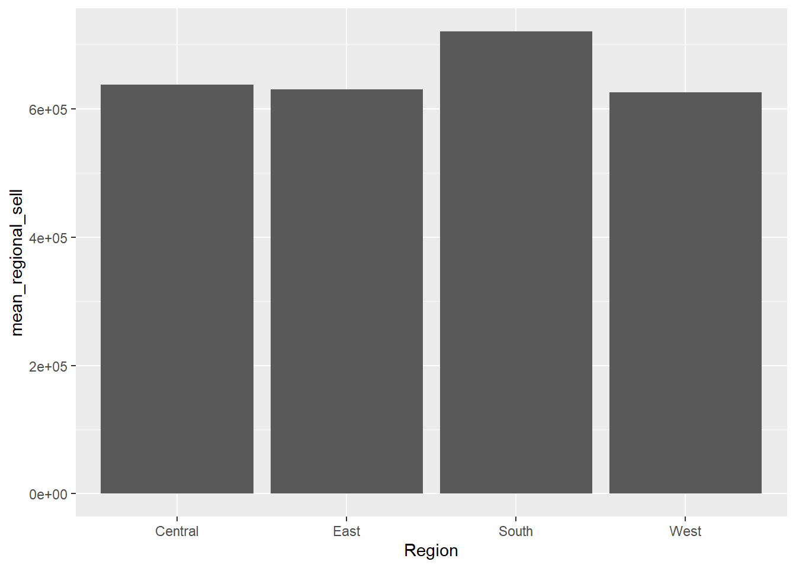
5.2.2 Time Series
Alternatively, you could want to view the mean sales price year on year. To do so, we can create a line plot. Of course, we first need to group the data by year and compute the mean sales value:
Show the code
subset %>%
group_by(year) %>%
summarise(mean_yearly_sell = round(mean(selling_price, na.rm = TRUE),0)) %>%
ggplot(aes(x = year, y = mean_yearly_sell)) +
geom_line()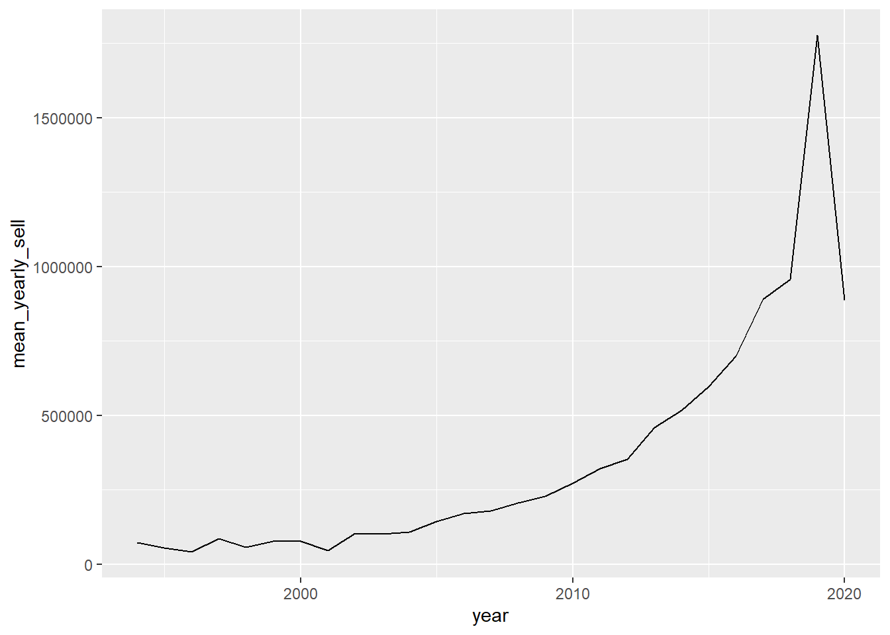
A quick glance at the plot will serve as a reminder that 2020 was an eventful year in every industry.
5.2.3 Boxplots
One of the final examples we will highlight is the boxplot. Boxplots are a key part of descriptive statistics, and as such, a very important tool to master. Suppose we want to see the distribution of prices for each region. We use the geom_boxplot() function. Note that it automatically generates the data distribution, so there is no need to reshape data.
Show the code
subset %>%
ggplot(aes(x = Region, y = selling_price)) +
geom_boxplot()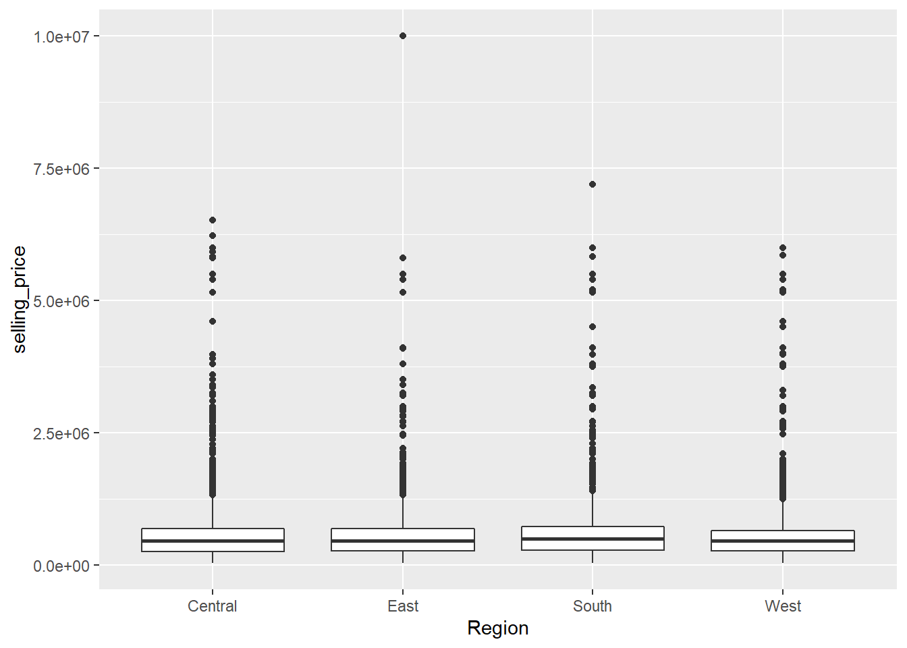
There are, of course, many other types of plots that can be generated using ggplot2. You can either have a look at the package documentation, or for a more user-friendly overview, check the ggplot2 cheat sheet in the Introduction-to-R repository.
5.3 Colours, Fills and ‘Long’ Data
All the plots above only made use of two of the variables in our data. We can make usage of the the blank demeanor of our plot, and add a third variable through the user of colors and fills. (colors for lines and dots, fills for columns, bars, etc.)
Note that ggplot favours ‘long’ data over ‘wide’ data. Let us illustrate this with the following example:
Show the code
data = tibble(month = c(1:12),
units_1999 = c(sample(c(100:150), 12, replace = TRUE)),
units_2000 = c(sample(c(110:160), 12, replace = TRUE)),
units_2001 = c(sample(c(105:155), 12, replace = TRUE)))
data# A tibble: 12 × 4
month units_1999 units_2000 units_2001
<int> <int> <int> <int>
1 1 102 156 134
2 2 126 124 131
3 3 136 157 125
4 4 132 131 120
5 5 142 158 134
6 6 137 133 143
7 7 121 126 119
8 8 147 132 135
9 9 104 154 114
10 10 147 139 124
11 11 116 139 107
12 12 121 152 131Let’s try to put this data into a line chart using geom_line():
Show the code
data %>%
ggplot(aes(x = month)) +
geom_line(aes(y = units_1999)) +
geom_line(aes(y = units_2000)) +
geom_line(aes(y = units_2001))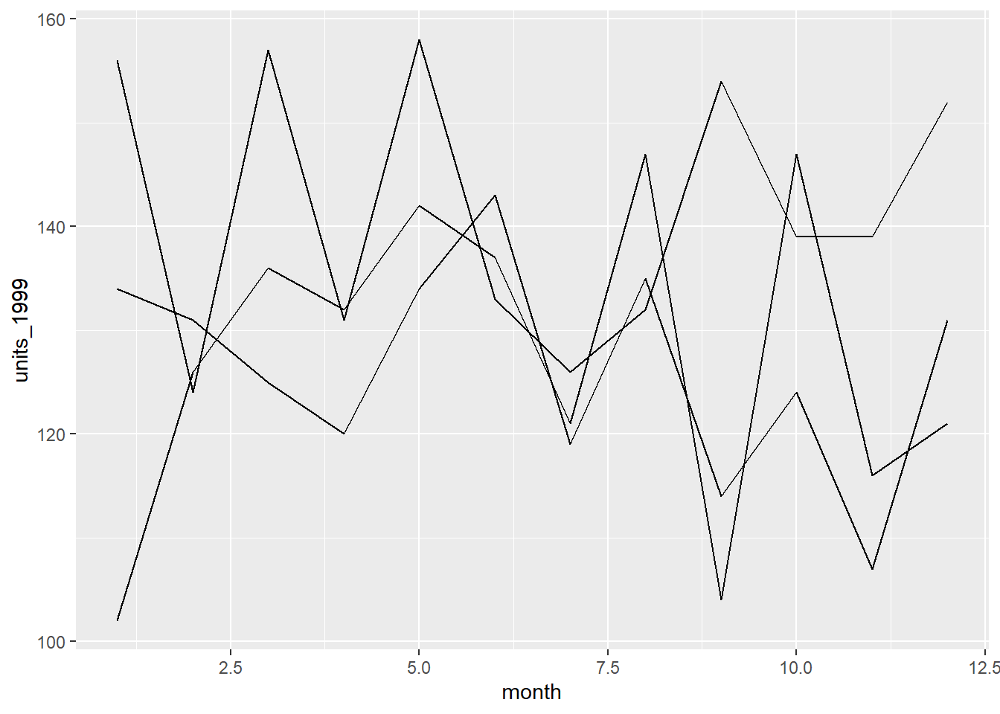
As you can see, it is feasible, yet rather impracticle. It would also leave us with the tedious task of manully assigning colours. Instead, we can reorganize our data using the pivot_longer function:
Show the code
data = data %>%
pivot_longer(-month, names_to = 'variable', values_to = 'values')
data %>% head(n = 2)# A tibble: 2 × 3
month variable values
<int> <chr> <int>
1 1 units_1999 102
2 1 units_2000 156First, we go over the arguments in pivot_longer. We first select the columns that need to be ‘pivoted’. In this case, we excluded the ‘month’ column, which does not need to be pivoted, using the minus sign. Then we define the target columns where the previous column headers need to be stored (units_1999, units_2000, and units_2001). We label it ‘variable’. Then we define the target column for the values.
Now we have a ‘long’ dataframe, with only three columns. We can therefore map the ‘month’ variable to the x-axis, the ‘values’ column to the y-axis, and lastly assign colours to the different factors in the ‘variable column. Lastly, because this is a line plot, you need to tell ggplot which point series to connect the lines. In the geom_line, use the aes option, the group argument needs to be linked to the ’variable’ column which contains the different factors.
Show the code
data %>%
ggplot(aes(x = month, y = values, colour = variable)) +
geom_line(aes(group = variable))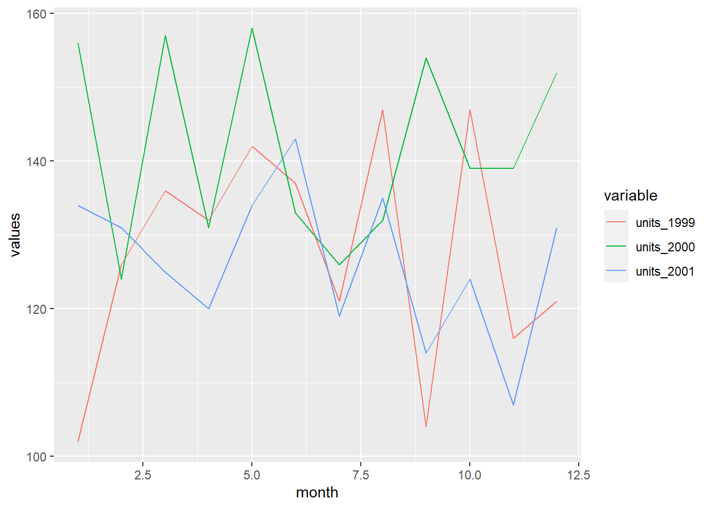
This data could also be used to plot a barchart:
Show the code
data %>%
ggplot(aes(x = month, y = values, fill = variable)) +
geom_col()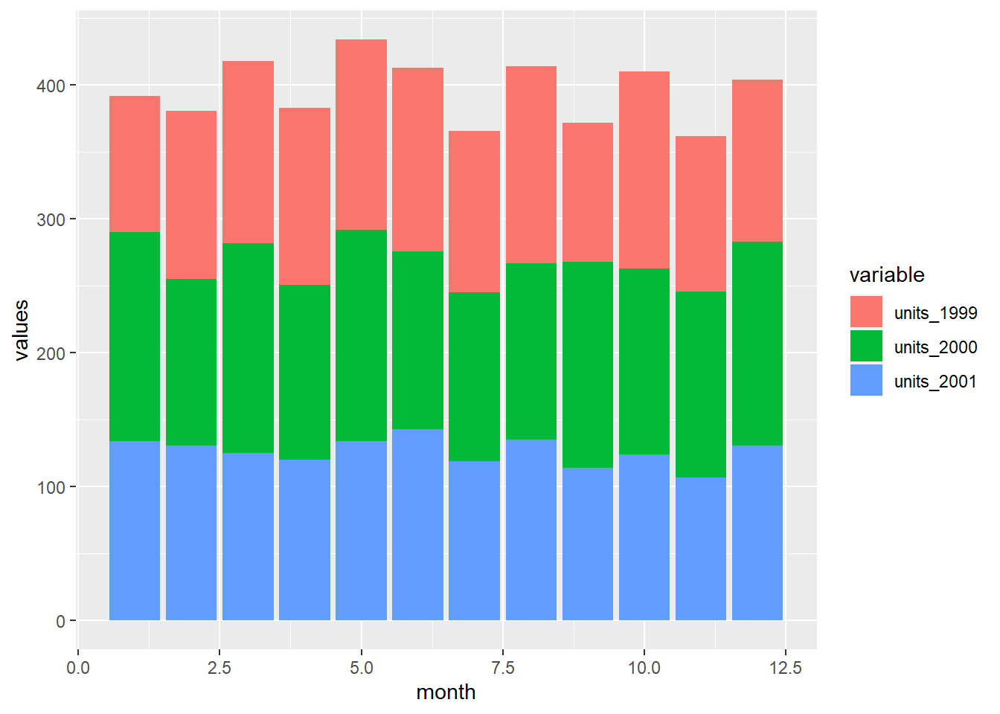
You now have a proper grasp on the main types of graphs available to you, and you easily present the data in a colourful manner. We can now work on making the above plot more tidy.
5.4 Plot and Axis Titles
Every graph needs a title:
Show the code
data %>%
ggplot(aes(x = month, y = values, fill = variable)) +
geom_col() +
ggtitle(label = 'Sales by Year')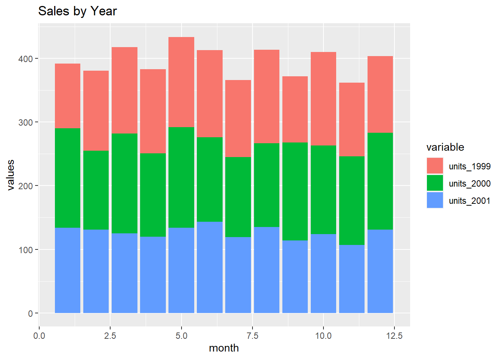
We can simply use the ggtitle plot option, and write the title in quotation marks following the label argument. However, it is generally more practicle to use the labs option, since you can also specify a subtitle as well as the axis titles:
Show the code
data %>%
ggplot(aes(x = month, y = values, fill = variable)) +
geom_col() +
labs(title = 'Sales by Year',
subtitle = '.com bubble',
x = 'Month',
y = 'Units Sold')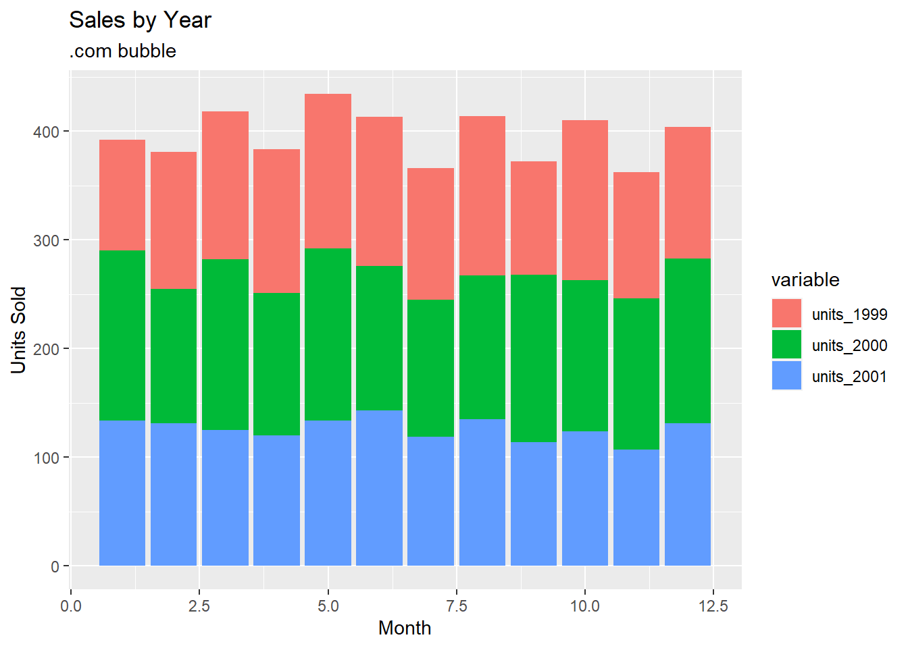
Now, we will illustrate a common problem with the x-axis overlapping. Let’s transform our month identifiers to their full name counterparts. We use the month function from the lubridate package. We need to specify that we want the ‘label’ value, e.g. the month name (‘January’,‘February’, etc.) and we want the full label, so we set abbr to FALSE. We use the mutate function to replace the old month column. Lastly, we produce our plot anew:
Show the code
data %>%
mutate(month = month(month, label = TRUE, abbr = FALSE)) %>%
ggplot(aes(x = month, y = values, fill = variable)) +
geom_col() +
labs(title = 'Sales by Year',
subtitle = '.com bubble',
x = 'Month',
y = 'Units Sold')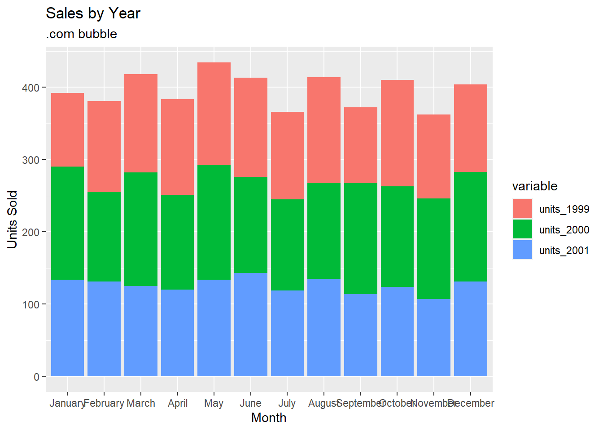
It is starting to look more clear, but the x-axis labels are now overlapping. We use the theme option to fix that problem, by giving the text an angle:
Show the code
data %>%
mutate(month = month(month, label = TRUE, abbr = FALSE)) %>%
ggplot(aes(x = month, y = values, fill = variable)) +
geom_col() +
labs(title = 'Sales by Year',
subtitle = '.com bubble',
x = 'Month',
y = 'Units Sold') +
theme(axis.text.x = element_text(angle = 45, vjust = 1, hjust = 1))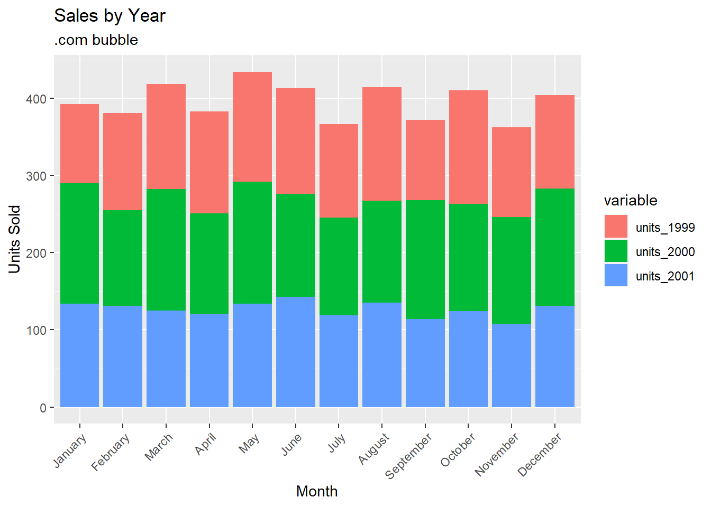
We used the axis.text.x argument in the theme option to specify which axis to transform. Then the element_text argument allows us to enter an angle, and align the labels with the tick marks using hjust and vjust, which vertically and horizontally move the labels.
Next, the legend is nice, but it takes up a lot of space on the right. We can place it at the bottom of the graph using the theme option and the legend.position argument:
Show the code
data %>%
mutate(month = month(month, label = TRUE, abbr = FALSE)) %>%
ggplot(aes(x = month, y = values, fill = variable)) +
geom_col() +
labs(title = 'Sales by Year',
subtitle = '.com bubble',
x = 'Month',
y = 'Units Sold') +
theme(axis.text.x = element_text(angle = 45, vjust = 1, hjust = 1),
legend.position = 'bottom')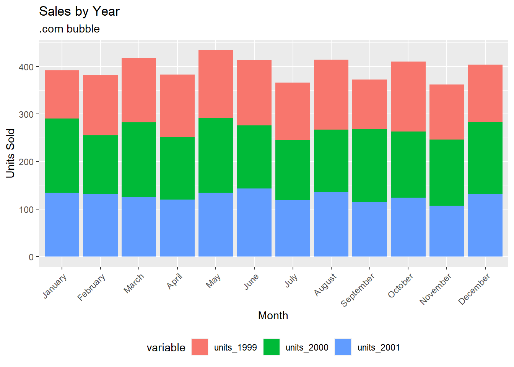
The four available options are top, bottom, left, and right.
Now, suppose the colour palette does not suit your taste, there are multiple options. In this section, we only cover the automatic mapping of the colour elements. There are various palettes available in base-R, and many more from packages. The one I use the most is from the viridis package. Let’s load it, and theme use the scale_fill_viridis_d argument to set the palette to viridis’ discrete option (since our colour scheme is based on factors, which are by definition, not continuous):
Show the code
library(viridis)Loading required package: viridisLiteShow the code
data %>%
mutate(month = month(month, label = TRUE, abbr = FALSE)) %>%
ggplot(aes(x = month, y = values, fill = variable)) +
geom_col() +
labs(title = 'Sales by Year',
subtitle = '.com bubble',
x = 'Month',
y = 'Units Sold') +
scale_fill_viridis_d()+
theme(axis.text.x = element_text(angle = 45, vjust = 1, hjust = 1),
legend.position = 'bottom')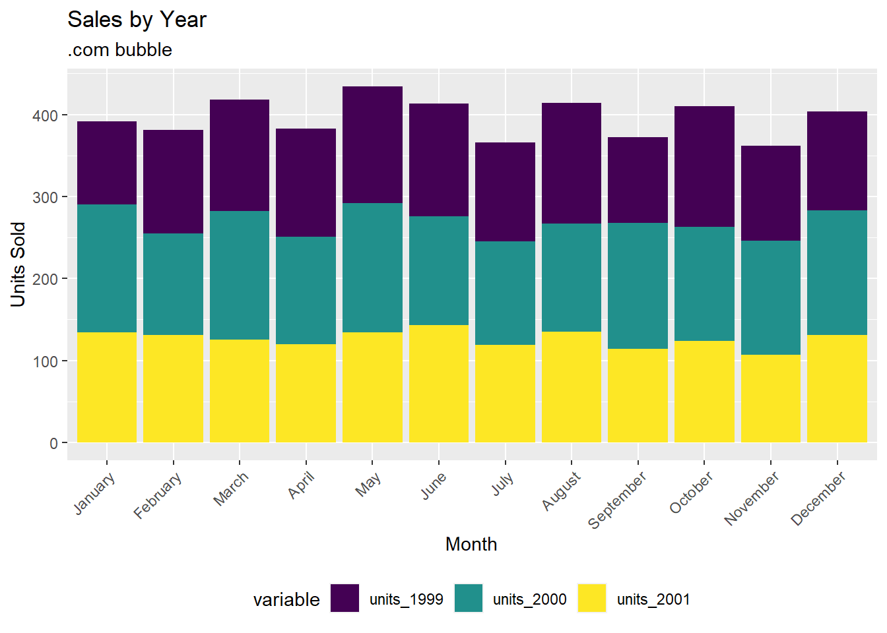
Inside the scale customization, there are a number of things we can do. Firstly, the viridis palette allows for multiple colour schemes. Second, you can define where on that scheme you want to start and end:
Show the code
library(viridis)
data %>%
mutate(month = month(month, label = TRUE, abbr = FALSE)) %>%
ggplot(aes(x = month, y = values, fill = variable)) +
geom_col() +
labs(title = 'Sales by Year',
subtitle = '.com bubble',
x = 'Month',
y = 'Units Sold') +
scale_fill_viridis_d(option = 'viridis', begin = 0.1, end = 0.9)+
theme(axis.text.x = element_text(angle = 45, vjust = 1, hjust = 1),
legend.position = 'bottom')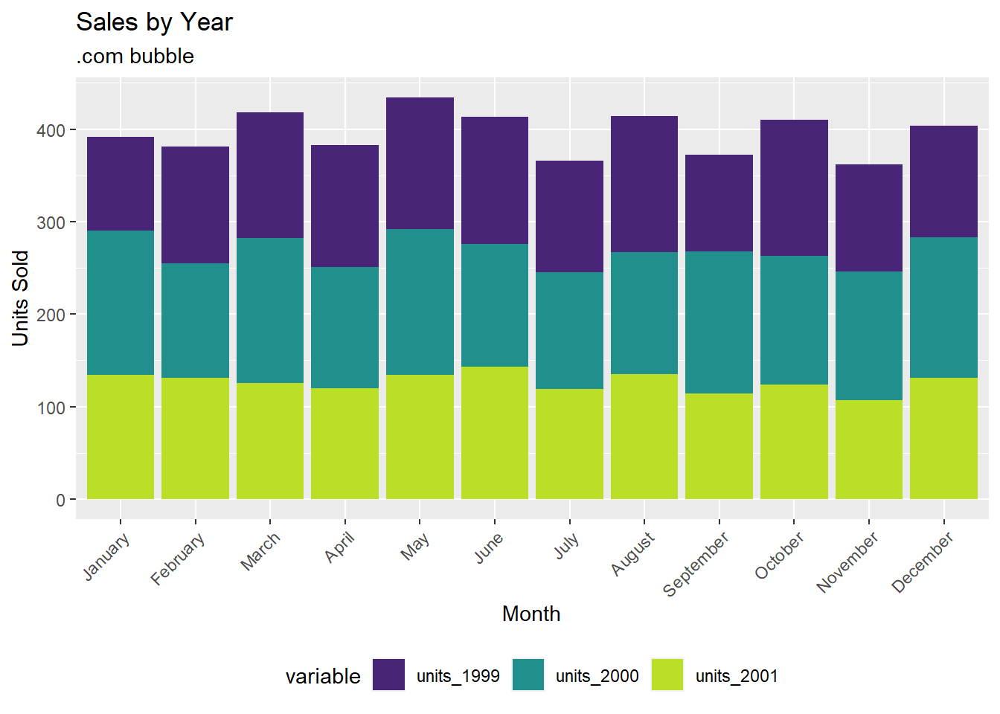
The option argument allows you to specifiy the palette. Those are listed on the viridis cran page: https://cran.r-project.org/web/packages/viridis/vignettes/intro-to-viridis.html. The begin and end argument are used to specifiy the subset of the palette that is used.
Next, we modify the legend title to reflect our data. Since we have now defined a scale, we can simply use the name argument to name it:
Show the code
library(viridis)
data %>%
mutate(month = month(month, label = TRUE, abbr = FALSE)) %>%
ggplot(aes(x = month, y = values, fill = variable)) +
geom_col() +
labs(title = 'Sales by Year',
subtitle = '.com bubble',
x = 'Month',
y = 'Units Sold') +
scale_fill_viridis_d(name = 'Year', option = 'viridis', begin = 0.1, end = 0.9)+
theme(axis.text.x = element_text(angle = 45, vjust = 1, hjust = 1),
legend.position = 'bottom')Lastly, you can also edit the labels of the legend. There are many different ways to do that. You could change the data itself. However, we will opt for the label argument inside the scale_fill option:
Show the code
library(viridis)
data %>%
mutate(month = month(month, label = TRUE, abbr = FALSE)) %>%
ggplot(aes(x = month, y = values, fill = variable)) +
geom_col() +
labs(title = 'Sales by Year',
subtitle = '.com bubble',
x = 'Month',
y = 'Units Sold') +
scale_fill_viridis_d(name = 'Year', option = 'viridis', begin = 0.1, end = 0.9, labels = c(1999,2000,2001))+
theme(axis.text.x = element_text(angle = 45, vjust = 1, hjust = 1),
legend.position = 'bottom')Not that this is the fastest way to achieve the desired result, but not necessarily the best one. If your data might change in the future, for example if more column years are added, or if the order of your factors changes, it might result in an erroneous plot.
Show the code
data %>%
mutate(month = month(month, label = TRUE, abbr = FALSE)) %>%
ggplot(aes(x = month, y = values, fill = variable)) +
geom_col() +
labs(title = 'Sales by Year',
subtitle = '.com bubble',
x = 'Month',
y = 'Units Sold') +
scale_fill_viridis_d(name = 'Year', option = 'viridis', begin = 0.1, end = 0.9, labels = c(1999,2000,2001))+
theme_bw() +
theme(axis.text.x = element_text(angle = 45, vjust = 1, hjust = 1),
legend.position = 'bottom')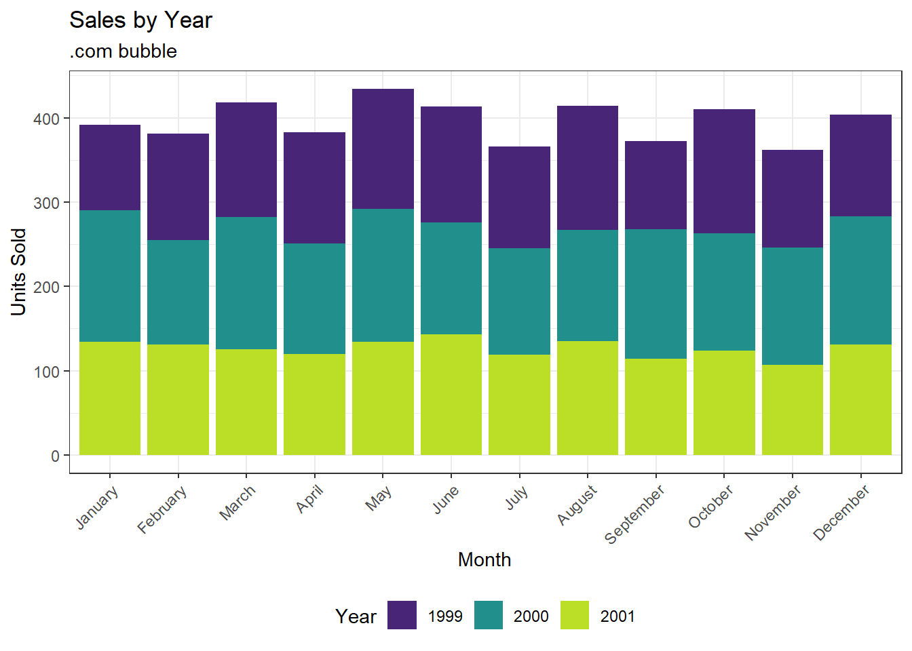
Show the code
library(ggthemes)
data %>%
mutate(month = month(month, label = TRUE, abbr = FALSE)) %>%
ggplot(aes(x = month, y = values, fill = variable)) +
geom_col() +
labs(title = 'Sales by Year',
subtitle = '.com bubble',
x = 'Month',
y = 'Units Sold') +
scale_fill_viridis_d(name = 'Year', option = 'viridis', begin = 0.1, end = 0.9, labels = c(1999,2000,2001))+
theme_gdocs() +
theme(axis.text.x = element_text(angle = 45, vjust = 1, hjust = 1),
legend.position = 'bottom')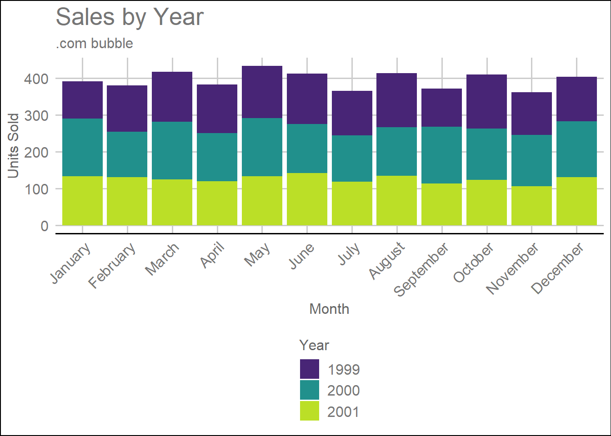
Show the code
library(hrbrthemes)NOTE: Either Arial Narrow or Roboto Condensed fonts are required to use these themes. Please use hrbrthemes::import_roboto_condensed() to install Roboto Condensed and if Arial Narrow is not on your system, please see https://bit.ly/arialnarrowShow the code
data %>%
mutate(month = month(month, label = TRUE, abbr = FALSE)) %>%
ggplot(aes(x = month, y = values, fill = variable)) +
geom_col() +
labs(title = 'Sales by Year',
subtitle = '.com bubble',
x = 'Month',
y = 'Units Sold') +
scale_fill_viridis_d(name = 'Year', option = 'viridis', begin = 0.1, end = 0.9, labels = c(1999,2000,2001))+
theme_ipsum_rc() +
theme(axis.text.x = element_text(angle = 45, vjust = 1, hjust = 1),
legend.position = 'bottom')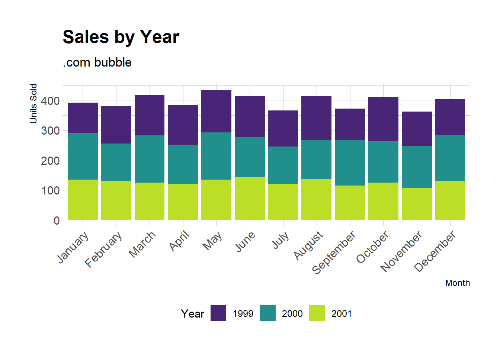